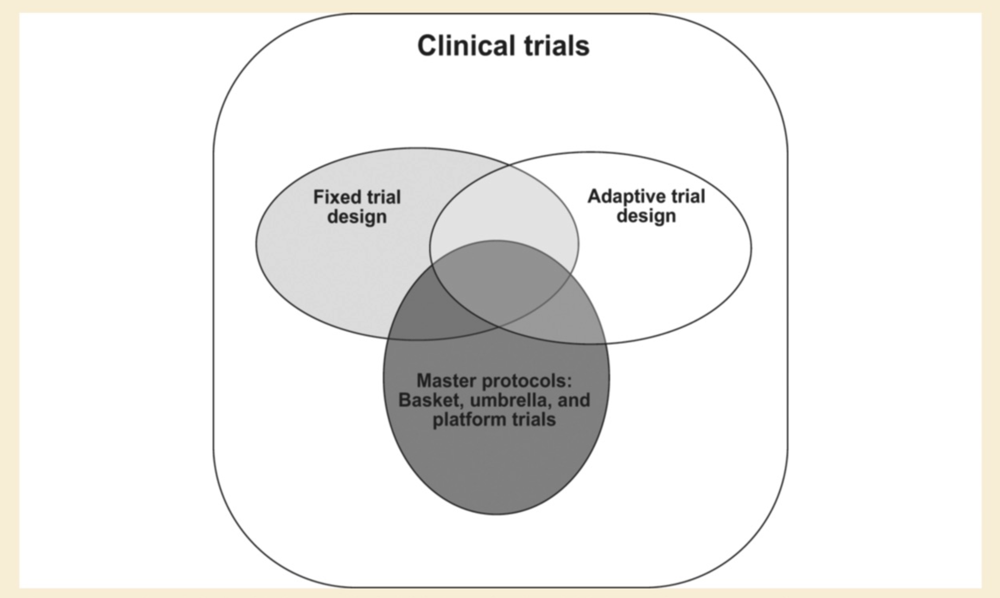

Introduction to Clinical Trial Research#
Presenter : Sang Ho Park
Clinical Research#
Basically focuses on human.
Two types : Clinical trial / Observational study
Clinical trial#
Prospective interventional study according to clinical trial protocol
Follow over time until specific events occur or follow-up ends
Have a potential risk to clinical trial participants.
to know whether specific intervention is safe and efficacious.
Observational study#
may be prospective or retrospective
observe participants without assigning treatments according to a protocol
Types : Case-control study, cross-sectional study, cohort study
Clinical Trial Phase#
Information on specific intervention develops through previous clinical research and non-clinical research (such as cell experiment or animal research). Each clinical trial phase provides evidence about safety and efficacy.
Phase 1
Research question focuses primarily on safety
to determine dose range and to figure out pharmacokinetics (about body absorption) and pharmacodynamics (about body reaction)
Phase 2 (or exploratory study)
Research question focuses on safety and efficacy
phase IIA / phase IIB
phase IIA : proof-of-concept with small numbers of subjects
phase IIB : conducted on a large number of participants and determine optimal dose
Phase 3 (or confirmatory study)
conducted in a large population during a longer period
to confirm if specific intervention has safety and efficacy to a target population
In general, treatment assignment is randomized
Compare specific intervention vs placebo (not severe) or standard-of-care treatment (often severe disease)
Regulatory approval from FDA or MFDS…
Randomization#
assigns subjects to treatment group or control group by chance
offers similar baseline characteristics between treatment group and control group so that they are comparable
removes confounding bias and selection bias
Imbalance may occur by chance or a system
Randomization techniques#
Simple randomization
simply assigns treatment groups by chance.
may result in imbalance when sample size is small
Block randomization
using a set of blocks with pre-specified assignments with randomness
Ex) If block size is a four and allocation ratio of two-arm trial is equal, blocks will be AABB, ABAB, ABBA, BAAB, BABA, and BBAA
can be unblinded by principal investigator if he or she knows the block size
Often use different block sizes such as 4 and 6.
Ex: AABB ABABBA …
Stratified randomization
randomization utilizing a few prognostic factors
Ex) Sex (Male vs Female). Randomized participants within male and female separately
The number of stratification variables should be restricted
Ex) The number of strata for Sex (male vs female) and disease severity (mild vs moderate vs severe) is 6 (2 * 3)
Equipoise#
Genuine uncertainty on clinical trial interventions in terms of relative merits
Clinical equipoise
refers to equipoise within medical experts community
Ethical basis
Clinical trial should be based on clinical equipoise to protect participants’ right.
Parallel Group and Crossover Designs#
Parallel Design
Assigned by randomization and remained until the study ends.
Crossover Design
randomized to a series of interventions.
Ex) Two-arm crossover trial : AB or BA
Washout period is needed
Multi-Arm and Factorial Designs#
Multi-arm designs
more than two arms
shared control group or head-to-head comprison
Factorial designs
a set of combinations of interventions
equal to or more than two interventions
Ex) Two set of interventions A, B : A alone group, B alone group, A+B group, no A nor B group
Fixed Sample Trial Design#
Fixed maximum sample size
Fixed a number of interventions
Fixed a recruitment period
Trial design, trial conduct according to pre-planned protocol, analysis according to pre-planned statistical analysis plan
Adaptive Trial Design#
Pre-specified adaptive components based on trial data such as allocation ratio, sample size, and eligibility
Master Protocol#
In general, one hypothesis in clinical trial needs one protocol.
Master protocol oversees multiple interventional hypotheses. Therefore, we call it as “Master protocol”
Type : Platform trial, basket trial, umbrella trial
Platform trial
with multiple interventions vs shared a control group
with flexibility such as addition of interventions
Basket trial
multiple disease (different cancers) with a common risk factor (such as EGFR mutation)
can be platform trial
Umbrella trial
multiple targeted therapies (various mutations) in a single disease (such as breast cancer)
can be platform trial
Estimands#
ICH E9 (R1) Statistical Principles for Clinical Trials describes the concept of estimands.
Scientific question of interest
trial objective
The target population
Treatment strategy
Endpoint (given specific outcome)
Strategies for handling intercurrent events
Intercurrent events could hinder the causal estimation of intervention in terms of clinical question of interest
Summary measurement
Intention-to-treat (ITT) principle
statistical analysis is performed in accordance to assigned group whether they received actual intervention
Per-protocol (PP) analysis
Including only data from participants who follow the protocol
can occur selection bias
Strategies for handling intercurrent events
Treatment policy strategy
The intercurrent event is considered as irrelevant. It is related to ITT principle
Most common estimand
Composite strategy
Intercurrent event is integrated in an endpoint. For example, outcome could be defined as no rescue therapy and an improved clinical outcome.
Hypothetical strategy
Imagine intercurrent event is not occurred so missing imputation is needed when participants have experienced intercurrent event
While on treatment strategy
analyze participants’ data until intercurrent event occurs
Principal stratum strategy
Subpopulations of interest are defined on the occurrence of intercurrent events.
Analyze subpopulation
population-level summary measure
could include odds ratio, risk ratio, or hazard ratio and so on.
Sample Size and Statistical Power Determination#
Statistical Power
When treatment has an effect, statistical power denotes the probability of detecting an effect (informal definition).
When alternative hypothesis is true, statistical power denotes the probability of rejecting the null hypothesis (formal definition).
Typically setting 80%
Type 1 error
When null hypothesis is true, type 1 error denotes the probability of rejecting the null hypothesis.
The level of significance
accepted level of type 1 error rate in a clinical research
In general, typically setting 5%
Sample size calculation
Utilizing type 1 error, statistical power, effect size, standard deviation, and allocation ratio
pre-planned value prior to the start of clinical trial
Frequentist vs Bayesian Statistics#
Frequentist statistics consider the unknown parameter is fixed but Bayesian statistics consider the unknown parameter is a random variable. Frequentist approach repeats sampling procedures and estimate utilizing sampling uncertainty. Bayesian approach considers unknown parameter follows a probability distribution. Uncertainty is represented by the probability distribution of unknown parameter.
For example, frequentist approach repeats sampling procedure and gets confidence intervals with 100 numbers. A confidence interval may include or not include unknown parameter because unknown parameter is fixed quantity. 95% confidence interval stands for 95% of confidence intervals will include the unknown parameter.
However, in bayesian approach, incorporating prior distribution (prior belief on unknown parameter) and likelihood (observed), unknown parameter follows a probability distribution (posterior distribution). We could construct 95% credible interval directly from a probability distribution.
p-value is the probability of obtaining test results at least as extreme as the result actually observed, under the assumption that the null hypothesis is correct (wikipedia en). When p-value is below 0.05, null hypothesis would be rejected. However, A p-value of 0.01 does not mean that the probability of null hypothesis is true is 0.01.
